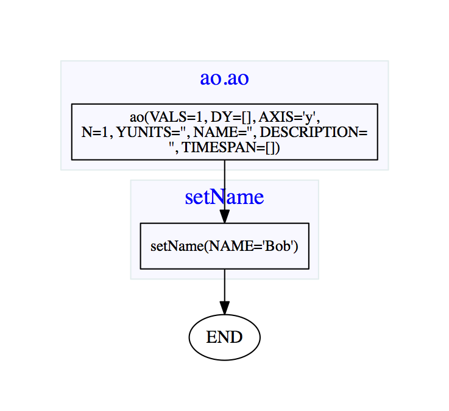

| LTPDA Toolbox™ | contents | |
AOs can be constructed in many different ways. Each of the different ways is called a constructor. For example, there is a constructor to make an AO from a set of numeric values, there is also a constructor to make an AO from a data file. Each time you construct an AO, you make an instance of the class, ao. The variable you have in MATLAB is then just a reference to the object you constructed.
This may all sound confusing to start with, but will become clearer as we go through the examples below.
Let's make an AO. On the MATLAB terminal, type the following: a = ao and hit return. You should see an output like the following:
>> a = ao()
M: running ao/ao
M: running ao/display
----------- ao 01: a -----------
name: ''
data: None
hist: ao / ao / b078ca046a8f6c078b4bc5895a6ed5492ec3b7bd
description:
UUID: eeed5558-00bc-4c44-beb4-f17c2835f780
--------------------------------
Note that the number of lines beginning with the "M:" syntax may vary depending on the level of "verbosity" that can be set via the LTPDA Preferences You have just made your first AO. It's not a very exciting AO since it contains no data, but it is an AO nontheless. So now let's make an AO with some data in it. Type the following in to the MATLAB terminal: a = ao(1) and hit return. You should see
>> a = ao(1)
----------- ao 01: a -----------
name: ''
data: 1
-------- cdata [vals] ------------
y: [1x1], double
dy: [0x0], double
yunits:
----------------------------------
hist: ao / ao / b078ca046a8f6c078b4bc5895a6ed5492ec3b7bd
description:
UUID: f6de0f9b-1067-48c2-bf2b-4dd04e1d358f
--------------------------------
Now you can see that your AO has some data. The data is of type cdata (more on that later), it has no Y units, and it contains a single value, 1.
Note also that the information shown in the "hist" field may vary depending on the version of the LTPDA Toolbox you installed. The string reported there is a hash of the git repository hosting the source code of LTPDA.
We can now go on and manipulate this AO. For example, suppose we want to set its name. Type the following in to the MATLAB terminal: a.setName('Bob') and hit enter. You should see:
>> a.setName('Bob')
----------- ao 01: Bob -----------
name: Bob
data: 1
-------- cdata [vals] ------------
y: [1x1], double
dy: [0x0], double
yunits:
----------------------------------
hist: ltpda_uo / setName / b078ca046a8f6c078b4bc5895a6ed5492ec3b7bd
description:
UUID: aed61cbd-13ae-45c3-a63b-8d38b98813e1
----------------------------------
The ao has a new name. The function (or more strictly, the method) setName has acted on the AO, a. An equivalent statement would be: setName(a, 'Bob').
By doing this, you have modified a. If instead you do
b = setName(a, 'Bob')
or
b = a.setName('Bob')
then you get a new variable, b, which is a distinct (deep) copy of a. The original AO, a, has not been modified. Try this out.
Keeping trace of the analysis step applied to the data contained in one or more objects is one of the key features supported in LTPDA. Analysis Objects, and more complicated data objects that we will cover in following sections, can be modified by LTPDA functions (simple mathematical operators, property settings, complicated algorithms). The basic components acting on LTPDA Objects are called methods. Each method adds one step in the history of the object, so that the flow of the actions happened on the data can be tracked, inspected, and re-run. This might become very useful in particular when dealing with many steps of analysis, but also in simple cases. LTPDA supports viewing the history in two ways. The more elegant one, especially in the case of complicated analysis flows, for instance involving many objects, is using Graphviz. If your machine has graphviz already installed, and you've set this up in the LTPDA Preferences, then you can immediately do:
dotview(a.hist, plist('filename', 'tmp.pdf')) % or a.viewHistory();
and you should get a figure something like that below in your system pdf viewer. You can see the only things we have done are to construct the object and set its name.
Don't worry about all this plist business, we'll get to that soon enough. For now it's enough to know that the conversion to pdf is done by the graphviz engine, and this needs to write the pdf to a file. That's the 'filename' specified in that last command.
Installation of graphviz is covered in the LTPDA user manual under the section System Requirements.
For short history trees, and in case the call to viewHistory fails because graphviz is not installed, the history can also be viewed using the method type(). In the MATLAB terminal, type a.type and hit return. You should get a MATLAB list of lines looking something like:
>> a.type
--------------------------------------------------
------------------------Bob------------------------
--------------------------------------------------
a8692974 = ao([plist('VALS', [1], 'DY', [], 'AXIS', 'y', 'N', [1], 'YUNITS', '', 'NAME', '', 'DESCRIPTION', '', 'TIMESPAN', [])]); % ao
a8693125 = setName(a8692974, [plist('NAME', 'Bob')]); % ltpda_uo
a_out = a8693125;
--------------------------------------------------
------------------------Bob------------------------
--------------------------------------------------
We said earlier that the AO we created has no Y units set. If you look at the output on the MATLAB terminal you will see that the Y units is actually a property of the data, not of the AO. This is because the data inside the AO is actually an object in its own right. There exist 5 data types in LTPDA:
| Data class | Description |
|---|---|
|
cdata |
Intended for storing an arbitrary matrix of values. This class has two main fields: the data itself is stored in the field y, and the units of the data in yunits. |
|
tsdata |
Intended for storing time-series data. More details on this one later. |
|
fsdata |
For storing frequency-series data. |
|
xydata |
For storing an arbitrary set of x-y data pairs. |
|
xyzdata |
For storing an arbitrary set of x-y-z data sets, for example for time-frequency maps. |
Getting back to our Y units. To set the value of the Y units, the AO class has a method called (not surprisingly) setYunits. To set the Y units of this AO, type the following in to the MATLAB terminal: a.setYunits('km') and hit return. You should see the following output:
>> a.setYunits('km')
----------- ao 01: Bob -----------
name: Bob
data: 1
-------- cdata [vals] ------------
y: [1x1], double
dy: [0x0], double
yunits: [km]
----------------------------------
hist: ao / setYunits / b078ca046a8f6c078b4bc5895a6ed5492ec3b7bd
description:
UUID: a90feb2e-a9dd-4690-9455-65ae48ca7176
----------------------------------
Now you see that the AO has Y units of 'km'. (To get a list of supported units in LTPDA, type the following command in to the MATLAB terminal: unit.supportedUnits. To get a list of supported prefixes, type unit.supportedPrefixes.)
Additional, user-defined units can be added to LTPDA via the LTPDA Preferences.
| |
Introducing Analysis Objects | Making a time-series AO | |
©LTP Team